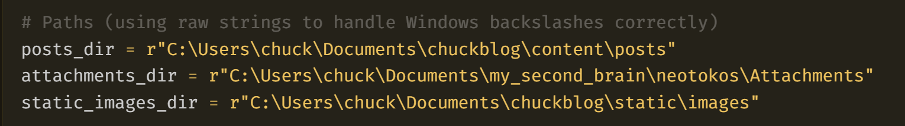
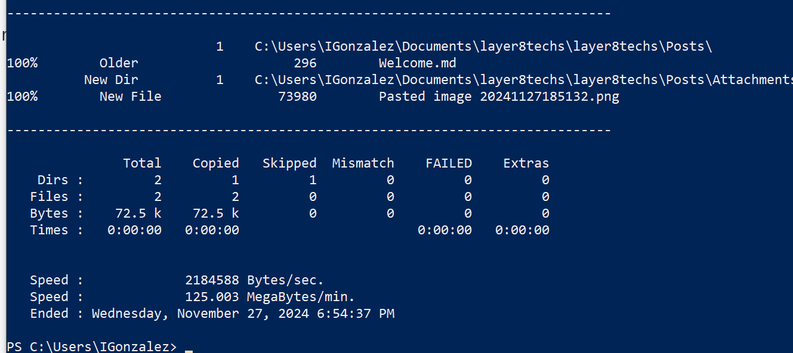

Welcome
Welcome
November 27, 2024
ℹ️
Please visit GitHub to see the latest releases.
This is your new vault.*


robocopy sourcepath destination path /mirMake a note of something, [[create a link]], or try the Importer!
When you’re ready, delete this note and make the vault your own.